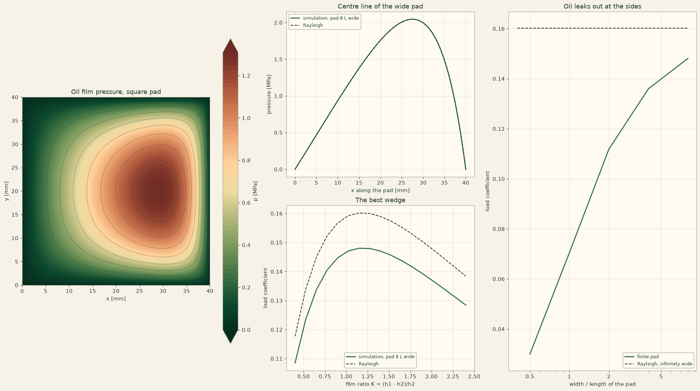

Docs › Examples › Tilted pad thrust bearing
Lubrication · 3D
Tilted pad thrust bearing
A pad with an inclined face lets a sliding runner drag oil into a wedge, where the pressure rises and carries the load.
Run locally with OneSimulation. The example downloads are free. Running them requires an activated runtime. Runtime Alpha 0.2.1a8 · CPython 3.13 on macOS (Apple Silicon), Ubuntu 22.04 (x86-64), and Windows x64. Installation and activation · View pilot plans. Scope of the reference checks.


What it computes
OneSimulation reads the pad from a STEP file, takes its lubricated face and solves the Reynolds equation of the oil film with quadratic elements, with the film open to the oil bath at all four edges. Meshes of three sizes, pads from half as wide to eight times as wide as long, and a sweep of the film ratio show the pressure, the load and the loss of oil through the sides. The script that builds the STEP files comes with the notebook.
What it checks
On the pad eight times as wide as long the pressure on the centre line matches Rayleigh's closed-form solution within 0.02 % of the peak, and the load of the square pad is the same to five digits on three meshes. The load per width of the finite pads rises towards Rayleigh's value as they get wider, 7.6 % below it at eight times, and is largest at a film ratio h1/h2 of 2.21 against Rayleigh's 2.19.
Geometry
Save the STEP files tilted_pad_thrust_bearing.step, tilted_pad_thrust_bearing_w05.step, tilted_pad_thrust_bearing_w2.step, tilted_pad_thrust_bearing_w4.step, tilted_pad_thrust_bearing_w8.step next to the notebook before running it.
The geometry script
The script tilted_pad_thrust_bearing_geometry.py builds the geometry with the CAD objects of OneSimulation and writes the files. Change a dimension there, run it, and run the notebook again.
"""Geometry of the OneSimulation example "Tilted pad thrust bearing".
Builds with the CAD objects of OneSimulation the lubricated surface of a thrust-bearing pad as a thin
plate 40 mm long (x, the direction of sliding) with its corner at the origin. File
tilted_pad_thrust_bearing.step holds the square pad, 40 mm wide; the files
tilted_pad_thrust_bearing_w05.step, _w2.step, _w4.step and _w8.step hold pads 0.5, 2, 4 and 8 times
as wide as long. The faces are named inlet (x = 0, where the oil enters), outlet (x = L, the thin end of the
film) and sides (the two edges along the direction of sliding).
"""
from onesim.cad.d3 import Box
length, thickness = 0.04, 0.002
for name, ratio in (("", 1.0), ("_w05", 0.5), ("_w2", 2.0), ("_w4", 4.0), ("_w8", 8.0)):
pad = Box(length=length, width=ratio * length, height=thickness)
named = lambda condition: pad.select(faces=condition)
pad = pad.grouped(
inlet=named(lambda face: abs(face.center[0]) < 1e-9),
outlet=named(lambda face: abs(face.center[0] - length) < 1e-9),
sides=named(
lambda face: abs(face.center[1]) < 1e-9
or abs(face.center[1] - ratio * length) < 1e-9
),
)
pad.save(f"tilted_pad_thrust_bearing{name}.step")The notebook
The complete notebook, cell by cell. Run it to produce the figures and the comparison printout.
A thrust bearing carries an axial load on a film of oil between a runner that slides at the speed \(U=10\) m/s and a stationary pad. The pad is \(L=40\) mm long in the direction of sliding and tilted so that the film narrows from \(h_1\) at the inlet to \(h_2=50\ \mu\)m at the outlet: \(h(x)=h_1-(h_1-h_2)\,x/L\). The oil (\(\mu=0.05\) Pa s) is dragged into the wedge and the pressure rises. The film is much thinner than the pad is long, so the pressure does not change across the film and obeys the Reynolds equation on the surface of the pad,
where \(U\,\mathbf e_x\) is the sum of the velocities of the two walls. The film is open at all four edges to the oil bath at the ambient pressure, \(p=0\). The pad is read from the CAD file tilted_pad_thrust_bearing.step as its lubricated face; tilted_pad_thrust_bearing_w05.step to _w8.step hold the same pad 0.5 to 8 times as wide. They are written by tilted_pad_thrust_bearing_geometry.py with the CAD objects of OneSimulation.
| face | condition |
|---|---|
inlet, outlet | open to the bath, \(p=0\) |
sides | open to the bath, \(p=0\) |
Reference. For a pad that is infinitely wide Rayleigh (1918) integrated the equation once along the film. With \(h_1=h_2(1+K)\) and \(a=(h_1-h_2)/L\),
and the load per unit width has its maximum \(W'=0.1602\,\mu UL^2/h_2^2\) at the film ratio \(h_1/h_2=2.19\), \(K=1.19\) (D. F. Hamrock, Fundamentals of Fluid Film Lubrication, 1994, §8.3; A. Cameron, Basic Lubrication Theory, 3rd ed., 1981, §4.2). A finite pad loses oil through its sides, so its load per width stays below the Rayleigh value and approaches it as the pad gets wider.
import numpy as np
from onesim.cad.exchange import load
from onesim.meshing import TriangularMesher
from onesim.numerics import Numerics
from onesim.numerics.fem import FiniteElement, Lagrange
from onesim.numerics.linear import SparseDirect
from onesim.physics.hydrodynamics import FixedFilmPressure, ReynoldsLubrication
from onesim.results.comparisons import convergence
from onesim.simulation import Problem, Simulation
from onesim.visualization import plots, theme
theme.set()Geometry and mesh
section cuts the thin plate at mid-height: its upper face is the lubricated surface, \(x\) along the pad and \(y\) across it. Quadratic Lagrange elements are used; the three meshes of the square pad have target sizes of 4, 2 and 1 mm.
square = load("tilted_pad_thrust_bearing.step")
pad = square.section((0, 0, 1), origin=(0, 0, 0.001))
length, width = square.size[0], square.size[1]
sizes = np.array([4e-3, 2e-3, 1e-3])
meshes = [TriangularMesher(target_size=size).generate(pad) for size in sizes]
fig = plots.figure(1, 2, size=(14, 6.5))
plots.geometry(
square,
selection={
"inlet": square.boundaries.inlet,
"outlet": square.boundaries.outlet,
"sides": square.boundaries.sides,
},
labels=False,
camera=plots.Camera(elevation=25, azimuth=-60),
title="The pad: sliding in the direction of x",
ax=fig[0],
)
plots.mesh(
meshes[1],
groups=("all",),
legend=False,
title=f"Lubricated surface, 2 mm: {meshes[1].cell_count} triangles",
ax=fig[1],
)
plots.show()Model and solution
ReynoldsLubrication takes the film thickness as a function of position, the wall velocity and the viscosity; the open edges carry FixedFilmPressure. The function solve below builds the film for a pad of any width and ratio \(K\) and returns its pressure field.
mu, speed, thin = 0.05, 10.0, 50e-6
def solve(surface, mesh, ratio):
gap = lambda x, y: thin * (1 + ratio * (1 - x / length))
model = ReynoldsLubrication(
domain=surface.domain(),
film_thickness=gap,
wall_velocity=(speed, 0.0, 0.0),
viscosity=mu,
)
edges = surface.boundaries
problem = Problem(
name="Tilted pad",
geometry=surface,
physics=(model,),
boundary_conditions=tuple(
FixedFilmPressure(physics=model, boundary=edge, value=0.0)
for edge in (edges.inlet, edges.outlet, edges.sides)
),
)
result = Simulation(
problem=problem,
mesh=mesh,
numerics=Numerics(
spatial=FiniteElement(element=Lagrange(order=2), quadrature_order=5),
linear_solver=SparseDirect(),
),
).solve_stationary()
return result.field(model.pressure)
K = 1.2
mesh_study = [solve(pad, mesh, K) for mesh in meshes]
widths = {
"0.5": "tilted_pad_thrust_bearing_w05.step",
"1": "tilted_pad_thrust_bearing.step",
"2": "tilted_pad_thrust_bearing_w2.step",
"4": "tilted_pad_thrust_bearing_w4.step",
"8": "tilted_pad_thrust_bearing_w8.step",
}
pads = {
ratio: load(name).section((0, 0, 1), origin=(0, 0, 0.001))
for ratio, name in widths.items()
}
wide = {
ratio: solve(surface, TriangularMesher(target_size=2e-3).generate(surface), K)
for ratio, surface in pads.items()
}
ratios = np.linspace(0.4, 2.4, 17)
long_pad = pads["8"]
long_mesh = TriangularMesher(target_size=2e-3).generate(long_pad)
film_sweep = [solve(long_pad, long_mesh, k) for k in ratios]Comparison with Rayleigh's solution
The load is the integral of the pressure over the pad. Its dimensionless form \(W/(\mu U B L^2/h_2^2)\) is compared with the integral of Rayleigh's pressure, with the pressure on the centre line of the widest pad, and the film ratio of the largest load is found from the sweep.
rayleigh = lambda x, k: (
lambda h1, h, a: 6 * mu * speed / a * (1 / h - 1 / h1)
- 6 * mu * speed * h1 * thin / ((h1 + thin) * a) * (1 / h**2 - 1 / h1**2)
)(thin * (1 + k), thin * (1 + k * (1 - x / length)), thin * k / length)
x = np.linspace(0.0, length, 401)
scale = mu * speed * length**2 / thin**2
rayleigh_load = lambda k: np.trapezoid(rayleigh(x, k), x) / scale
coefficient = lambda field, breadth: field.integrate().value / (scale * breadth)
widest = wide["8"]
centre = np.column_stack((x, np.full_like(x, 4 * length)))
print(f"film ratio K = {K}: Rayleigh load coefficient {rayleigh_load(K):.5f}")
print(
"target size [mm] triangles load coefficient W/(mu U B L^2/h2^2) peak pressure [MPa]"
)
for size, mesh, field in zip(sizes, meshes, mesh_study):
peak = field.evaluate(
np.column_stack((np.linspace(0, length, 401), np.full(401, 0.5 * width)))
).max()
print(
f"{1e3 * size:16.0f} {mesh.cell_count:11d} {coefficient(field, width):37.5f} {peak / 1e6:23.4f}"
)
study = convergence([coefficient(f, width) for f in mesh_study], sizes)
print(
f"square pad, observed order {study.order:.2f}, extrapolated load coefficient {study.extrapolated:.5f}"
)
print("pad width / length load coefficient Rayleigh (infinitely wide) difference")
for ratio, field in wide.items():
value = coefficient(field, float(ratio) * length)
print(
f"{float(ratio):18.1f} {value:18.5f} {rayleigh_load(K):28.5f} {100 * (value / rayleigh_load(K) - 1):+12.2f} %"
)
peak_centre = widest.evaluate(centre).max()
print(
f"pad 8 times as wide as long: pressure on the centre line {peak_centre / 1e6:.4f} MPa at its peak, Rayleigh {rayleigh(x, K).max() / 1e6:.4f} MPa "
f"({100 * (peak_centre / rayleigh(x, K).max() - 1):+.2f} %), largest deviation along the line "
f"{100 * np.abs(widest.evaluate(centre) - rayleigh(x, K)).max() / rayleigh(x, K).max():.2f} % of the peak"
)
sweep = np.array([coefficient(field, 8 * length) for field in film_sweep])
best = ratios[np.argmax(sweep)]
fit = np.polyfit(ratios[np.argsort(-sweep)[:5]], sweep[np.argsort(-sweep)[:5]], 2)
print(
f"load against film ratio on the pad 8 times as wide as long: largest at K = {-fit[1] / (2 * fit[0]):.3f} with coefficient {np.max(sweep):.4f} "
f"(Rayleigh: K = 1.187, 0.1602 for the infinitely wide pad); film ratio h1/h2 = {1 + (-fit[1] / (2 * fit[0])):.2f}"
)Figure
The pressure on the square pad, and along the centre line of the wide pad against Rayleigh's pressure; then the load against the width of the pad and against the film ratio, the second one with the sweep and Rayleigh's curve.
fig = plots.figure(
layout=[["surface", "centre", "widths"], ["surface", "ratio", "widths"]],
size=(18, 10),
)
nodes = np.asarray(meshes[-1].coordinates)
plots.heatmap(
1e3 * nodes[:, 0],
1e3 * nodes[:, 1],
mesh_study[-1].evaluate(nodes) / 1e6,
triangles=np.asarray(meshes[-1].cells),
contours=10,
label="p [MPa]",
xlabel="x [mm]",
ylabel="y [mm]",
title="Oil film pressure, square pad",
ax=fig["surface"],
)
plots.line(
1e3 * x,
{"simulation, pad 8 L wide": widest.evaluate(centre) / 1e6},
reference={"Rayleigh": (1e3 * x, rayleigh(x, K) / 1e6)},
xlabel="x along the pad [mm]",
ylabel="pressure [MPa]",
title="Centre line of the wide pad",
legend="upper left",
ax=fig["centre"],
)
plots.line(
[float(r) for r in wide],
{"finite pad": [coefficient(f, float(r) * length) for r, f in wide.items()]},
reference={"Rayleigh, infinitely wide": ([0.4, 8.0], [rayleigh_load(K)] * 2)},
scale="logx",
xlabel="width / length of the pad",
ylabel="load coefficient",
title="Oil leaks out at the sides",
legend="lower right",
ax=fig["widths"],
)
plots.line(
ratios,
{"simulation, pad 8 L wide": sweep},
reference={"Rayleigh": (ratios, [rayleigh_load(k) for k in ratios])},
xlabel="film ratio K = (h1 - h2)/h2",
ylabel="load coefficient",
title="The best wedge",
legend="lower center",
ax=fig["ratio"],
)
plots.show()Going further
Tilt the pad also across its width, or let the pad swing: put the pivot at 58 % of the length and find the film thickness at which the moment about it vanishes; let the viscosity follow the temperature of the oil film; or replace the straight wedge by a step, whose exact solution is also known.